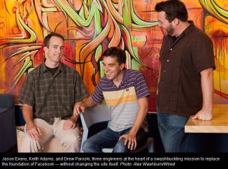

C++ Tutorial - API Testing
From API design for C++ by Martin Reddy
The trend toward applications that depend on third-party API s is particularly popular in the field of cloud computing. Web applications rely more and more on Web services (APIs) to provide core functionality. In this case of Web mashups, the application itself is sometimes simply a repackaging of multiple existing services to provide a new service, such as combining the Google Maps API with a local crimes statistics database to provide map-based interface to the crime data.
In fact, it's worth taking a few moments to highlight the importance of C++ API design in Web development. A superficial analysis might conclude that server-side Web development is confined to scripting languages, such as PHP, Perl, or Python, or .NET languages based on Microsoft's ASP (Active Server Pages) technology. This may be true for small-scale Web development. However, it is noteworthy that many large-scale Web services use a C++ backend to deliver optimal performance.
In fact, Facebook developed a product called HipHop to convert their PHP code into C++ to improve the performance of their social networking site. C++ API design therefore does have a role to play in scalable Web service development. Additionaly, if we develop our core APIs in C++, not only can they form a high-performance Web service, but our code can also be reused to deliver our product in other forms, such as desktop or mobile phone versions.
An article on the Facebook's HipHop project:

How Three Guys Rebuilt the Foundation of Facebook
White box testing
Tests are developed by the programmers who know the sources code.Black box testing
Tests are developed based on specifications and without any knowledge of the code. These kinds of tests are often done by manually using an end-user apps.
Unit tests are usually written by programmers who know the implementation details. So, unit test is a white box test.
#include <iostream>
#include <sstream>
#include <cassert>
double StringToDouble(const std::string &s;)
{
std::stringstream ss(s);
double d;
if(ss >> d) {
return d;
}
else
return 0;
}
void Test_StringToDouble()
{
// simple case:
assert( 0.12345 == StringToDouble( "0.12345"));
// blank space:
assert( 0.12345 == StringToDouble( "0.12345 "));
assert( 0.12345 == StringToDouble( " 0.12345"));
// trailing non digit characters:
assert(0.12345 == StringToDouble( "0.12345a"));
assert(0 == StringToDouble( "0" ));
assert(0 == StringToDouble( "0." ));
assert(0 == StringToDouble( "0.0" ));
assert(0 == StringToDouble( "0.00" ));
assert(0 == StringToDouble( "0.0e0" ));
assert(0 == StringToDouble( "0.0e-0" ));
assert(0 == StringToDouble( "0.0e+0" ));
std::cout << "Passed the test" << std::endl;
}
int main()
{
Test_StringToDouble();
return 0;
}
In the above example, we want to test the function which converts string to a double:
double StringToDouble(const std::string &s;)
This function accepts a string parameter and returns a double. If not, it returns 0. Given that function, void Test_StringToDouble() unit test function performs a series of checks to ensure that it works as expected.
An assert() evaluates its argument and calls abort() if the result if zero(false). For example:
void foo(int *ptr)
{
assert(!ptr != 0); // assert that ptr != 0; abort() if ptr is zero
}
Before aborting, assert() spits out the name of its source file and the number of the line on which it appears, and this makes assert() a useful debugging aid. After abort() is called, the program execution will be terminated.
As long as NDEBUG is not defined, the assert() macro evaluates the condition. Note that the NDEBUG is not defined by default. So in the initial stage of developing code, we let the debugging statements are executed by leaving NDEBUG undefined. Also note that NDEBUG is not automatically defined by Visual Studio when compiling in Debug Configuration let alone Release Configuration.
Because the popularity of JUnit, the testing framework for JUnit has been ported to many other languages, and it is known as xUnit. For Python, it is PyUnit, CUnit for C, and CppUnit for C++.
In real world, unlike the example given above, the object (or method) under test often depends on other objects in the system or on external resources such as database or objects on a remote server. This leads to two versions of views of unit testing:
Fixture Setup
The classic approach to unit testing is to initialize a consistent environment before each unit test is run. For example, to ensure that dependent objects are initialized, we copy a specific set of files to a known place, or we load a database with a prepared set of initial data. This is usually done in a SetUp() function associated with each test to differentiate test setup steps from the actual test operations. Once the test finishes, a related tearDown() function is used to clean up environment. In this way, the same fixture can often be resued for several times.Stub/mock objects
With this approach, the code under test is isolated from the rest of the system by creating stub (or mock) objects that represnent for any dependencies outside of the unit. For instance, if a unit test needs to communicate with a database, a stub database object an be created that accepts the subset of queries that the unit will generate and then return data in response. Note that we are not making any connection to the database. The outcome is completely isolated test that will not be affected by database problems, or other issues such as network issues, or file system permissions. However, the drawbacks of this approach is that the creation of these stub objects can be tedious and often they cannot be reused by other unit tests.
So, when our code depends on an unreliable resources, such as database, file system, or network, we should consider using stub or mock objects to get more robust unit tests.
It's a port of JUnit to C++, and it supports various helper macros to simplify the declaration of tests, capturing exceptions, and a range of output formats including XML. It also provides a number of different test runners such as Qt- and MFC-based GUI runners. CppUnit 2 is under development, and there is also an extremely lightweight version called CppUnitLite.
// file: cmplx.cpp
#include <CppUnit/TestCase.h>
#include <CppUnit/extensions/TestFactoryRegistry.h>
#include <CppUnit/CompilerOutputter.h>
#include <CppUnit/TestResult.h>
#include <CppUnit/TestResultCollector.h>
#include <CppUnit/TestRunner.h>
#include <CppUnit/TextTestProgressListener.h>
#include <CppUnit/TestCaller.h>
class Complex
{
public:
Complex( double r, double i = 0 )
: real(r), imaginary(i) {}
Complex& operator+(const Complex&);
private:
friend bool operator ==(const Complex& a, const Complex& b);
double real, imaginary;
};
bool operator ==( const Complex &a;, const Complex &b; )
{
return a.real == b.real && a.imaginary == b.imaginary;
}
Complex& Complex::operator+( const Complex &a; )
{
real += a.real;
imaginary += a.imaginary;
return *this;
}
class ComplexNumberTest : public CppUnit::TestFixture
{
private:
Complex *m_10_1, *m_1_1, *m_11_2;
public:
void setUp()
{
m_10_1 = new Complex( 10, 1 );
m_1_1 = new Complex( 1, 1 );
m_11_2 = new Complex( 11, 2 );
}
void tearDown()
{
delete m_10_1;
delete m_1_1;
delete m_11_2;
}
void testEquality()
{
CPPUNIT_ASSERT( *m_10_1 == *m_10_1 );
CPPUNIT_ASSERT( !(*m_10_1 == *m_11_2) );
}
void testAddition()
{
CPPUNIT_ASSERT( *m_10_1 + *m_1_1 == *m_11_2 );
}
};
int main ()
{
CppUnit::TestCaller test( "testEquality",
&ComplexNumberTest;::testEquality );
CppUnit::TestResult result;
test.run( &result; );
return 0;
}
Makefile is:
CPPUNIT_PATH=/cppunit
cmplxtest: cmplx.o
g++ -o cmplxtest cmplx.o -L${CPPUNIT_PATH}/lib -lcppunit -ldl
cmplx.o: cmplx.cpp
g++ -c cmplx.cpp -I${CPPUNIT_PATH}/include
clean:
rm -f *.o cmplx
The Framework of Google C++ Testing is based on xUnit architecture. It is a cross platform system that provides automatic test discovery. In other words, we don't have to enumerate all of the test in our test suite manually. It supports a rich set of assertions such as fatal assertions (ASSERT_), non-fatal assertions (EXPECT_), and death test which checks that a program terminates expectedly.
Here is a step by step tutorial how we can setup Google Test using Visual Studio 2012:
http://www.bogotobogo.com/cplusplus/google_unit_test_gtest.php.
Integration test is to test the interactions of components of the system. Integration test are still needed even though our codes passed unit tests. Integration tests are normally developed against the specification of the API, and not require knowledge of the implemention details. So, it is a black box testing.
Software Development Kit (SDK) is a platform specific package usually comes with the API (header files (.h) and the libraries (.dll, .so, .dylib)). It's a kit for software developer can compile/link against. Usually, an SDK may include other resources to help developer use the APIs: documents, example source code, and tools.
One of the most popular SDKs is Java SDK (JDK) that includes all the libraries, debugging utilities, etc., which would make developer's life much easier since there is no need to look for components/tools that are compatible with each other and all of them are integrated in to a single package that is easy to install.
So, an SDK at its minimum is an API.
Ph.D. / Golden Gate Ave, San Francisco / Seoul National Univ / Carnegie Mellon / UC Berkeley / DevOps / Deep Learning / Visualization